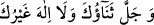

göre namazı kılınmaz. Çünkü böyle kimsenin tevbesi yoktur. Cenaze namazı ise ölü için
şefaat demektir.
2. (Müslüman) ölünün cenaze namazını kılmak âlimlerin çoğuna göre farz-ı kifâyedir.
Cenaze namazının vakti, ölünün hazır edildiği vakittir. Bundan dolayı (akşam namazına
yetiştirilen cenazenin) cenaze namazı akşam namazının sünnetinden önce kılınır. el-
Hizâne’de bu şekilde zikredilmiştir. Bir hadis-i şerifte: “Cenaze konusunda acele
ediniz.”[259] buyurulmuştur.
Bu fakir (Bursevî) der ki: Aslında zamanımızdaki her memleket halkı bu konuda
gaflet içinde hareket ediyor. Allah onları bağışlasın.
Cenaze güneşin doğuşu anında veya öğle vakti tam ortada iken ya da batışı esnasında
hazır edilmişse bu vakitlerden birisinde cenaze namazı kılınabilir, bunda kerahet yoktur.
Cenaze namazı kılınırken imam cenazenin göğsü hizasına durur. Çünkü göğüs ilim ve
îman nûrunun bulunduğu yerdir. Tekbir getirir ve Allah’a senâda bulunur. Yani imam ve
imama uyan ve münferid olan kişi şöyle der:
Ey Allah’ım, seni tesbih ve tenzih eder, sana hamdü senâda bulunurum. Senin
mukaddes ismin mübârektir ve senin azamet ve celâlin pek yüksektir. Senden başka
hiçbir ilâh yoktur.[260]
“__WORD__” kısmı meşhur hadislerde zikredilmemiştir. Bu yüzden farz namaz kılan
kimse onu okumaz. Nâfile namaz kılanın onu okumasında bir beis yoktur. Çünkü nâfile
ibâdetler konusunda müminlere genişlik tanınmıştır.
Halebî, Sübhaneke’deki bu cümlenin cenâze namazı dışındaki namazlarda terk
edilmesinin daha evlâ olduğunu söyler.
Cüllâbî’de zikredildiği üzere Sübhâneke’yi okuduktan sonra tekbir getirir ve bildiği
bir salât ile Peygamber’e (a.s.) salavât getirir. Ya da el-Mustasfâ’da belirtildiği üzere
farz namazlarda getirdiği salevâtları getirir ve şöyle der:
Ey Allahım! Peygamberimiz Muhammed’e ve O’nun ailesine salât et, onların şeref
ve kadrini yücelt, Hz. İbrahim ve ailesine salât ettiğin gibi. Ve yine Muhammed’i ve
âilesini mübarek kıl, onların feyiz ve bereketlerini daima arttır, Hz. İbrahim ve